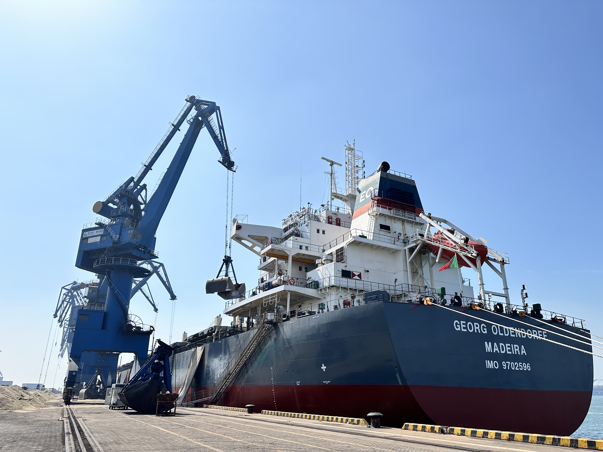

Electric Clinker Logistics Are Becoming a Real Cement Trade Signal, Not Just a Sustainability Story
Recent reporting on UltraTech's electric clinker trucking rollout in northern India points to a bigger shift: inland logistics is no longer a background cost line. For cement, clinker and SCM markets, transport technology is starting to influence competitiveness, route resilience and buyer confidence.
电动化熟料运输，正在从环保叙事变成真正的水泥贸易信号
UltraTech 近日在印度北部推进电动重卡运输熟料，这件事值得关注的地方，不只是“绿色”。它反映出更大的变化：内陆物流不再只是后台成本项，而开始影响水泥、熟料与 SCM 的竞争力、线路韧性和买家信心。

Several Indian industry outlets reported on 16 June that UltraTech Cement is deploying 45 electric heavy-duty trucks for clinker transportation in northern India, in partnership with Energy In Motion. The route reportedly links Kotputli Cement Works in Rajasthan with grinding units in Dadri and Sikandarabad, over an inland lead of about 250km across Rajasthan, Haryana and Uttar Pradesh. For the cement industry, that matters because clinker movement between integrated plants and grinding units is one of the most operationally sensitive parts of the value chain.

1. This is about logistics discipline, not just green branding
It is easy to read the announcement as a sustainability headline and stop there. That would miss the more commercial point. Clinker is not a decorative cargo. It sits at the center of plant-to-grinding coordination, inventory timing and working-capital discipline. If electric heavy trucks can operate reliably on this kind of route, producers gain more than an emissions talking point. They gain a new way to manage fuel exposure, route planning and service consistency in a cost line that has historically been exposed to diesel volatility.
Recent coverage also said the new deployment adds to a wider green-truck fleet already in operation. That suggests the move is not a one-off demonstration. It looks more like gradual system building. For buyers and traders, that distinction matters because repeatable logistics capability is more meaningful than a pilot that never scales.
2. Inland transport is becoming part of cement competitiveness
In cement and clinker markets, people often focus on kiln efficiency, grinding costs, export prices and vessel freight. Those factors still matter. But inland transport between plant, terminal and grinding point can quietly decide whether a supply chain is resilient enough to protect margin. If a producer can stabilise one of the most volatile legs of the chain, it may protect delivered cost even when energy markets stay uncertain.
That is why this kind of development deserves attention beyond India. A more reliable inland model can support tighter dispatch planning, lower disruption risk and better customer confidence. In trade terms, it can help define which producers remain competitive once delivered economics, not ex-works numbers, become the real battleground.

3. Why traders and SCM suppliers should care too
This is not only a clinker story. The same logic matters for slag, GBFS and GGBFS supply chains, where inland movement, intermediate handling and terminal coordination often decide whether an offer is truly workable. If logistics systems become cleaner, more predictable and less exposed to fossil-fuel swings, buyers may start rewarding not just low nominal prices but better delivered reliability across the full chain.
Takeaway: UltraTech's electric clinker truck rollout is a useful market signal because it shows how cement logistics is being redefined as strategy. The companies that win in the next phase may not simply be those with the cheapest tons. They may be the ones that can move those tons more steadily, more transparently and with less cost shock between origin and customer.
多家印度行业媒体在 6 月 16 日报道，UltraTech Cement 正与 Energy In Motion 合作，在印度北部部署 45 辆电动重卡运输熟料。公开信息显示，这条线路将把拉贾斯坦邦 Kotputli Cement Works 的熟料运往 Dadri 和 Sikandarabad 的粉磨站，单程大约 250 公里，跨越 Rajasthan、Haryana 与 Uttar Pradesh。之所以值得关注，是因为熟料从综合厂到粉磨站的内陆转运，本来就是水泥价值链里最敏感、最容易影响执行质量的一环。
1. 这不是单纯的“绿色宣传”，而是物流纪律升级
如果只把这条新闻理解成 ESG 或环保 headline，就会漏掉更关键的商业含义。熟料不是“好看”的货，它直接关系到综合厂与粉磨站之间的协同、库存时点和营运资金纪律。若电动重卡能在这种线路上稳定跑通，企业获得的就不只是减排叙事，而是对燃料成本暴露、路线规划和交付一致性的重新控制。对于长期受柴油价格波动影响的水泥物流来说，这一点很实际。
相关报道还提到，这 45 辆车是在其已有更大绿色车队基础上的继续扩展。这意味着它看起来不像一次孤立展示，更像是在逐步搭建一个可复制的系统。对买家和贸易商来说，能规模化的物流能力，远比一次性试点更有意义。
2. 内陆运输，正在成为水泥竞争力的一部分
在水泥和熟料市场里，大家通常更关注窑线效率、粉磨成本、出口价格和海运费。这些当然仍然重要。但工厂、终端和粉磨点之间的内陆运输，很多时候才是决定供应链有没有韧性、利润能否守住的“隐形变量”。如果企业能把这条最容易波动的链路稳定下来，它就有机会在能源市场仍然不确定的情况下，守住到岸或到厂成本。
所以，这类动作不应该只被当作印度本地新闻来看。更稳定的内陆运输模型，往往意味着更紧凑的发运计划、更低的中断风险和更好的客户信任。在贸易语言里，这会影响谁能在“到货经济性”成为主战场时持续保持竞争力，而不是只在出厂价层面看起来便宜。
3. 为什么贸易商和 SCM 供应商也应该关注
这不只是熟料故事。对矿渣、GBFS 和 GGBFS 来说，同样的逻辑成立。很多时候，报价是否真的可执行，不取决于纸面价格，而取决于内陆转运、中间装卸和终端协同是否顺畅。如果物流系统变得更清洁、更可预测、也更少受化石燃料价格冲击，那么未来买家奖励的，可能不只是低名义价格，而是整条交付链条上的稳定可靠。
结论：UltraTech 这次电动化熟料运输的推进，真正重要之处在于它提醒市场——水泥物流正在被重新定义为“战略能力”。下一阶段真正能赢的企业，也许不只是“吨位最便宜”的那一批，而是那些能把货更稳定、更透明、也更少受成本冲击地送到客户手里的企业。
Explore products or discuss your inquiry.
If this market signal is relevant to your sourcing plan, you can review our core product pages or contact us with laycan, quantity, target specification and loading method.
Request a quote